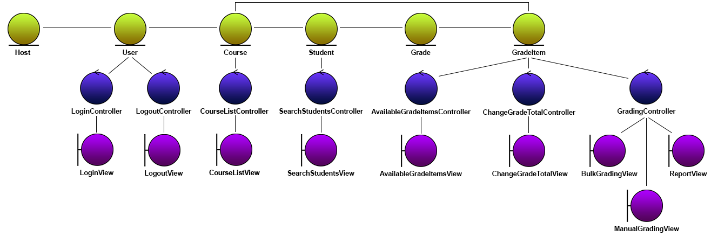

ezMarker - Analysis
Version 3.0
Last updated: November 20, 2017
Table of Contents
Introduction
ezMarker is a web application that allows instructors at Wilfrid Laurier University to bulk upload grades and feedback into MyLearningSpace, with the integration of the Brightspace API supported by D2L. The goal of ezMarker is to solve the issues regarding inefficient manual grade uploading and and feedback through the current MyLearningSpace interface. On average, it can take markers a few hours to physically upload grades for one class. Marking time is cut down to minutes with the use of ezMarker's bulk file uploading features. This document outlines the structure of the classes and objects for the ezMarker application, including the software interaction summary.
Object Classification
Object Diagram

Entity Objects
- Host - Store information about the connection, including the Internet Protocol and API version.
- User - Stores information about logged in user, including the user's identity and login credentials.
- Course - Stores information about a course, including the ID and name.
- GradeItem - Stores information about a grade item's parameters, including the ID and name. Implemented by specific grade item types.
- Grade - Stores a student's grade for a grade item. Implemented by specific grade types.
- OrgMember - Stores identifying information about a member of the organization.
Boundary Objects
- LoginView - Where user signs in with MLS credentials and receives Brightspace API token.
- LogoutView - Where user signs out.
- CourseListView - Where user gets a list of courses that they have permission to manage grades for.
- SearchStudentsView - Where user can search for students. The search is either by name or student identificaton number.
- AvailableGradeItemsView - Where user selects a grade item of a course.
- ChangeGradeTotalView - Where user can change the grade total for a grade item.
- ManualGradingView - Where user can manually input grades for a set of students.
- BulkGradingView - Where user can upload a file for bulk grade submission.
- ReportView - Where user will be shown how many grades were successfully set and if any errors occurred.
Control Objects
- LoginController - Handles retrieval of Brightspace token and updating the User object.
- LogoutController - Handles the user's signout process and updating User object.
- CourseListController - Allows retrieval of courses that the user has permission to upload grades to.
- SearchStudentsController - Allows searching of students by name or student ID.
- AvailableGradeItemsController - Allows retrieval of a course's GradeItems that the user has permission to upload grades to.
- ChangeGradeTotalController - Allows changing of the grade total of a grade item and updating GradeItem object.
- GradingController - Handles parsing, validating and uploading of students' grades and updating GradeItem object.
Class Diagram
Please refer to Section 3 of the analysis document for the Brightspace API Wrapper.
Revision History
Version 1.0 - 10/16/2017
Authors: Sumeet Jhand, Shuaib Reeyaz, Sarah Johnston
SQA: Harold Hodgins, Troy Nechanicky
Version 2.0 - 10/22/2017
Revision Notes
- Removed the use of "coordinates"
- Added object description details
Authors: Sumeet Jhand
SQA: Sophie Wang, Pirajeev Prabaharan
Version 3.0 - 11/12/2017
Revision Notes
- Added Host entity object and updated diagram
- Minor edits for clarity
Authors: Sumeet Jhand, Troy Nechanicky
SQA: Simon Phothitay